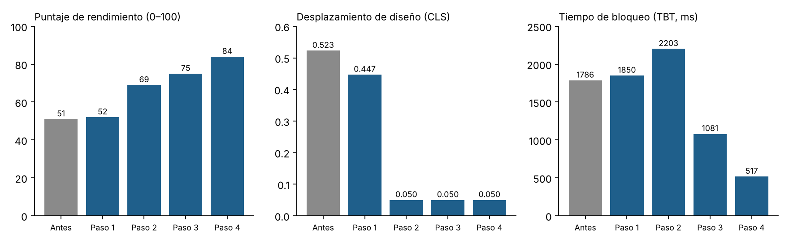

Lighthouse abre tu página en un Chrome controlado, la carga como lo haría un teléfono de gama media con conexión móvil lenta, y puntúa cuatro categorías de 0 a 100: rendimiento (qué tan rápido aparece y se vuelve usable), accesibilidad, buenas prácticas y SEO. La versión 13, la que se usó hoy, añade una quinta de navegación con agentes que revisa que la página no cambie de lugar mientras alguien (o algo) interactúa con ella.
Objetivos de aprendizaje
- ✓Explicar qué mide Lighthouse, qué no mide (la instalabilidad ya no es una categoría) y por qué sus números cambian de una corrida a otra.
- ✓Medir con método: varias corridas, la mediana y una línea base antes de tocar nada.
- ✓Convertir cada hallazgo del informe en un cambio concreto y comprobar con una segunda medición si ayudó.
- ✓Reservar espacio para lo que JavaScript dibuja tarde, y dibujar bajo demanda en lugar de 60 veces por segundo.
- ✓Reconocer que arreglar una métrica puede empeorar otra, y decidir con los datos a la vista.
- ✓Cerrar el Módulo AR con una lista de verificación que se ejecuta sola y que se probó que falla cuando algo está mal.
Recursos de esta sesión
- Descargar .zipCheckpoint — cierre de la Sesión 41. El Atlas 3D con instalación guiada y estado de conexión. Es el punto de partida de hoy (lo que Lighthouse audita primero).
- Descargar .zipVersión terminada de esta sesión. Con
meta description,<main>, espacio reservado, dibujo bajo demanda y Three.js en su propio paquete. - Informe «antes»El informe completo de Lighthouse (HTML) de la versión de la Sesión 41. Ábrelo en el navegador: se puede expandir cada auditoría.
- Informe «después»El informe completo de la versión de hoy.
1Qué mide Lighthouse, y qué ya no mide
Lo que ya no existe es la categoría «PWA»: desde la versión 12, Lighthouse dejó de puntuar la instalabilidad. Si quieres saber si Chrome considera instalable tu app, hay que preguntárselo a Chrome. Eso se hace con el protocolo de depuración (el mismo que usan las herramientas de desarrollo): Page.getAppManifest devuelve los errores del manifest y Page.getInstallabilityErrors devuelve por qué la app no sería instalable. Esta es la respuesta real de Chrome para el Atlas 3D de hoy (líneas 2 y 3 de la prueba de cierre que verás en la sección 6):
2) manifest → errores de Chrome: [] | name: Atlas 3D de Arquitectura de Software | display: standalone | start_url: ./ | iconos: ["192x192","512x512","512x512/maskable"]
3) Chrome dice: errores de instalabilidad → []
3) Chrome dice: errores de instalabilidad → []
Lo que Lighthouse no puede decir también cuenta. No prueba que el botón «Instalar» aparezca (depende de que Chrome dispare el evento en tu teléfono), ni la realidad aumentada, ni cómo se siente girar un modelo con el dedo. Lighthouse es un termómetro de la carga de la página, no una prueba de la app.
2Medir bien antes de tocar nada
Las mediciones de rendimiento varían: dos corridas seguidas de la misma página no dan lo mismo. Por eso se hizo así: servir la compilación de la Sesión 41 tal cual, correr Lighthouse tres veces con la configuración por defecto (móvil, con la lentitud simulada) y quedarse con la mediana.
Terminal
npm run build
npx serve dist -l 4310 # o cualquier servidor estático
npx lighthouse http://localhost:4310/ \
--chrome-flags="--headless=new" \
--output=html --output=json --output-path=./informeEsta es la línea base: el resumen de una de las corridas, escrito por un script que lee el JSON del informe.
$ python3 resumen.py base-3.report.json
Lighthouse 13.6.0 | mobile | throttling simulate
performance 51
accessibility 98
best-practices 100
seo 90
agentic-browsing 57
first-contentful-paint 1.7 s 0.93
largest-contentful-paint 1.7 s 0.99
total-blocking-time 1,790 ms 0.1
cumulative-layout-shift 0.523 0.15
speed-index 1.7 s 1
interactive 7.8 s 0.44
--- no aprobadas (score<1) ---
[performance] first-contentful-paint: 0.93 — First Contentful Paint | 1.7 s
[performance] largest-contentful-paint: 0.99 — Largest Contentful Paint | 1.7 s
[performance] total-blocking-time: 0.1 — Total Blocking Time | 1,790 ms
[performance] cumulative-layout-shift: 0.15 — Cumulative Layout Shift | 0.523
[performance] bf-cache: 0 — Page prevented back/forward cache restoration | 1 failure reason
[accessibility] landmark-one-main: 0 — Document does not have a main landmark. |
[best-practices] valid-source-maps: 0 — Missing source maps for large first-party JavaScript |
[seo] meta-description: 0 — Document does not have a meta description |
[agentic-browsing] cumulative-layout-shift: 0.15 — Cumulative Layout Shift | 0.523
Lighthouse 13.6.0 | mobile | throttling simulate
performance 51
accessibility 98
best-practices 100
seo 90
agentic-browsing 57
first-contentful-paint 1.7 s 0.93
largest-contentful-paint 1.7 s 0.99
total-blocking-time 1,790 ms 0.1
cumulative-layout-shift 0.523 0.15
speed-index 1.7 s 1
interactive 7.8 s 0.44
--- no aprobadas (score<1) ---
[performance] first-contentful-paint: 0.93 — First Contentful Paint | 1.7 s
[performance] largest-contentful-paint: 0.99 — Largest Contentful Paint | 1.7 s
[performance] total-blocking-time: 0.1 — Total Blocking Time | 1,790 ms
[performance] cumulative-layout-shift: 0.15 — Cumulative Layout Shift | 0.523
[performance] bf-cache: 0 — Page prevented back/forward cache restoration | 1 failure reason
[accessibility] landmark-one-main: 0 — Document does not have a main landmark. |
[best-practices] valid-source-maps: 0 — Missing source maps for large first-party JavaScript |
[seo] meta-description: 0 — Document does not have a meta description |
[agentic-browsing] cumulative-layout-shift: 0.15 — Cumulative Layout Shift | 0.523

El informe «antes» (corrida de la Sesión 41). El texto del informe está en inglés porque así lo entrega Lighthouse.
Estas cifras no son las de tu teléfono. Las corridas de esta sesión se hicieron en un Chromium sin tarjeta gráfica (WebGL dibuja por software) y con la lentitud simulada por Lighthouse. Sirven para comparar antes y después en las mismas condiciones, no para decir «en mi teléfono carga en 1,7 s». Si lo corres tú en Chrome (sección 7), tus números serán otros, y está bien: lo que debe repetirse es la dirección de los cambios.
Lectura de la línea base. El rendimiento está en 51, y no por lo que pesa la página ni por lo que tarda en aparecer (FCP y LCP son 1,7 s, en verde), sino por dos cosas: el tiempo de bloqueo (TBT 1790 ms: el hilo principal está ocupado y no atiende al usuario) y el desplazamiento de diseño (CLS 0,523, cuando lo bueno es menor que 0,1). Además, accesibilidad pide un <main> y SEO una meta description. Con eso el plan es claro: cuatro hallazgos, un cambio para cada uno, y medir otra vez después de cada uno.
3Hallazgo 1: dos etiquetas que faltaban
Los dos hallazgos más baratos. «El documento no tiene un punto de referencia main» (accesibilidad): quien navega con lector de pantalla salta directo al contenido principal, si la página lo declara. Y «el documento no tiene meta description» (SEO): es el texto que un buscador muestra bajo el título.
index.html (la descripción)
<meta name="description" content="Catálogo interactivo en 3D de patrones de arquitectura de software (MVC, capas y microservicios), con realidad aumentada y uso sin conexión." />El <main> envuelve las zonas de la página (visor, instalación, descargas) y se cierra justo antes de la superposición de AR. Como el body ya centraba su contenido en una columna, el main necesita repetir esa columna o la página se deforma:
src/style.css (el main)
.contenido { width: 100%; display: flex; flex-direction: column; align-items: center; }Resultado de estas etiquetas: accesibilidad 98 → 100 y SEO 90 → 100. El rendimiento casi no se mueve (51 → 52 en la medición por pasos, que ya incluía el alto del panel). Esperable: eran etiquetas, no velocidad.
4Hallazgo 2: lo que JavaScript dibuja tarde empuja todo lo demás
El CLS de 0,523 era el problema más grande. Un «desplazamiento de diseño» ocurre cuando algo que ya se veía cambia de lugar porque aparece contenido nuevo encima. En el Atlas pasa con dos zonas que se rellenan con JavaScript: el visor (el canvas de Three.js llega después de que se ejecuta el código) y el panel del modelo (pestañas, resumen, leyenda, chips y la ficha de la pieza). Mientras están vacíos ocupan casi nada; cuando se llenan, empujan hacia abajo todo el contenido de la página.
La solución no es hacer que aparezcan antes, sino reservarles su sitio desde el principio. Para el visor, cuyo alto es siempre tres cuartos de su ancho (con tope de 560 px, como calcula visor.ts), basta con decírselo a CSS:
src/style.css (reservar el espacio)
.modelo-panel { min-height: 25em; }
/* El visor también se llena con JavaScript (el canvas llega tarde): su alto se reserva con la misma
proporción que usa visor.ts (alto = 0,75 × ancho, máximo 560 px). Sin esto, todo lo de abajo saltaba. */
.visor { aspect-ratio: 4 / 3; max-height: 560px; }Reservar solo uno de los dos huecos no bastaba. Para saber cuánto aporta cada reserva se midió el código final quitándoselas (tres corridas por variante, mediana de CLS):
| Variante | CLS (mediana de 3) |
|---|---|
| Sin reservar nada | 0,523 |
Solo el alto del panel (min-height) | 0,447 |
Panel y visor (min-height y aspect-ratio) | 0,050 |
Sin las dos, el CLS es el de la línea base: las etiquetas meta y main no lo tocan. El panel solo no basta porque el visor, que también llega tarde, seguía empujando; hizo falta reservar los dos.
Un CLS bueno es un CLS bajo (< 0,1). Pasó de 0,523 a 0,05, y de ahí vino la mayor parte del salto de rendimiento de 52 a 69 en la medición por pasos. Fíjate también en el TBT: subió de 1850 a 2203 ms. Ese costo se atiende en los dos hallazgos siguientes.
5Hallazgo 3: dibujar solo cuando algo cambió
El TBT mide cuánto tiempo el hilo principal está ocupado sin dejar pasar al usuario. El visor tenía un bucle que llamaba a renderer.render() en cada fotograma, aunque la escena estuviera quieta. Es lo que hacen muchos ejemplos de Three.js, y es un gasto real: un modelo parado se redibujaba 60 veces por segundo, gastando batería y ocupando el hilo.
La solución es una bandera, «sucio», que dice «hay algo nuevo que dibujar». Quien cambia algo (elegir una pieza, cambiar de modelo, redimensionar, entrar o salir de AR) la levanta; el bucle dibuja solo si está levantada o si los controles dicen que la cámara se está moviendo (arrastre o inercia):
src/visor.ts (dibujo bajo demanda)
let sucio = true;
function ajustarTamano() {
const ancho = contenedor.clientWidth || 320;
const alto = Math.min(Math.round(ancho * 0.75), 560);
renderer.setSize(ancho, alto);
camara.aspect = ancho / alto;
camara.updateProjectionMatrix();
sucio = true;
}
ajustarTamano();
window.addEventListener("resize", ajustarTamano);
let animacion = 0;
function bucle() {
animacion = requestAnimationFrame(bucle);
if (porSensores) {
// Interpolación: alcanza el objetivo poco a poco (filtra el temblor del sensor).
grupo.rotation.x += (objetivoX - grupo.rotation.x) * 0.15;
grupo.rotation.y += (objetivoY - grupo.rotation.y) * 0.15;
sucio = true; // con sensores la escena se mueve sola
}
const camaraSeMovio = controles.update(); // true mientras el usuario (o la inercia) mueve la cámara
if (sucio || camaraSeMovio) {
sucio = false;
renderer.render(escena, camara);
}
}
bucle();Es un cambio pequeño pero delicado: si se olvida levantar la bandera en un lugar, esa acción deja de verse hasta el siguiente movimiento. Por eso la prueba de cierre mide cuántas veces se dibuja contando las llamadas reales de WebGL, y comprueba cada acción por separado (elegir pieza, cambiar de modelo, redimensionar, arrastrar). Sección 6.
Medición de este paso: rendimiento 69 → 75 y TBT 2203 → 1081 ms.
6Hallazgo 4: Three.js en su propio archivo
Quedaba el aviso que Vite imprime desde hace sesiones: un solo archivo de más de 500 kB. Casi todo ese peso es Three.js, que no cambia, mientras que el código de la app cambia cada sesión. Un archivo único tiene dos problemas: se descarga y analiza entero, en un solo bloque de trabajo (un «tarea larga» que bloquea el hilo), y cualquier cambio mínimo en la app obliga a descargar de nuevo la biblioteca. Vite permite separarlos:
vite.config.ts (separar Three.js)
build: {
rollupOptions: {
output: {
// Sesión 42: Three.js (la mayor parte del peso) va en su propio archivo: el código de la app
// cambia cada sesión, Three.js casi nunca, y así son dos descargas que se pueden cachear por separado.
manualChunks: { three: ["three"] },
},
},
},La compilación, tal cual la imprimió npm run build:
$ npm run build
> pwa-ar-objetos3d@0.0.0 build
> tsc && tsc -p tsconfig.sw.json && vite build
vite v5.4.21 building for production...
transforming...
✓ 27 modules transformed.
rendering chunks...
computing gzip size...
dist/index.html 4.29 kB │ gzip: 1.52 kB
dist/assets/index-CYynvKCQ.css 6.44 kB │ gzip: 1.82 kB
dist/assets/workbox-window.prod.es5-BqEJf4Xk.js 5.71 kB │ gzip: 2.34 kB
dist/assets/index-Z10u6Kuz.js 62.57 kB │ gzip: 20.50 kB
dist/assets/three-DFUxCYKs.js 482.73 kB │ gzip: 122.01 kB
✓ built in 1.80s
PWA v1.3.0
Building src/sw.ts service worker ("es" format)...
vite v5.4.21 building for production...
transforming...
✓ 89 modules transformed.
rendering chunks...
computing gzip size...
dist/sw.mjs 27.66 kB │ gzip: 9.16 kB
✓ built in 439ms
PWA v1.3.0
mode injectManifest
format: es
precache 9 entries (558.82 KiB)
files generated
dist/sw.js
> pwa-ar-objetos3d@0.0.0 build
> tsc && tsc -p tsconfig.sw.json && vite build
vite v5.4.21 building for production...
transforming...
✓ 27 modules transformed.
rendering chunks...
computing gzip size...
dist/index.html 4.29 kB │ gzip: 1.52 kB
dist/assets/index-CYynvKCQ.css 6.44 kB │ gzip: 1.82 kB
dist/assets/workbox-window.prod.es5-BqEJf4Xk.js 5.71 kB │ gzip: 2.34 kB
dist/assets/index-Z10u6Kuz.js 62.57 kB │ gzip: 20.50 kB
dist/assets/three-DFUxCYKs.js 482.73 kB │ gzip: 122.01 kB
✓ built in 1.80s
PWA v1.3.0
Building src/sw.ts service worker ("es" format)...
vite v5.4.21 building for production...
transforming...
✓ 89 modules transformed.
rendering chunks...
computing gzip size...
dist/sw.mjs 27.66 kB │ gzip: 9.16 kB
✓ built in 439ms
PWA v1.3.0
mode injectManifest
format: es
precache 9 entries (558.82 KiB)
files generated
dist/sw.js
El archivo principal pasó de 544,86 kB (Sesión 41) a 62,57 kB, y Three.js (482,73 kB) quedó aparte. El precaché del Service Worker lo incluyó solo (9 entradas, 558,82 KiB: antes 8 entradas y 557,95 KiB), porque la lista se genera al compilar. El aviso de «más de 500 kB» desapareció.
Medición de este paso: rendimiento 75 → 84 y TBT 1081 → 517 ms (el trabajo se reparte en tareas más cortas).
7El resultado, con las cifras a la vista

Mediana de tres corridas en cada etapa, acumulando los cambios: Paso 1 =
meta, main y alto mínimo del panel; Paso 2 = además el espacio del visor; Paso 3 = dibujo bajo demanda; Paso 4 = Three.js en su propio paquete.La medición final de la versión terminada (otra tanda de tres corridas) dio 82, 84 y 81, mediana 82. El Paso 4 de arriba (84) y esta tanda son la misma versión: dos puntos de diferencia solo por repetir la medición. Esa es la variación que hay que tener presente al leer cualquier cifra suelta.
$ python3 resumen.py desp-1.report.json
Lighthouse 13.6.0 | mobile | throttling simulate
performance 82
accessibility 100
best-practices 100
seo 100
agentic-browsing 100
first-contentful-paint 1.7 s 0.91
largest-contentful-paint 2.3 s 0.93
total-blocking-time 610 ms 0.49
cumulative-layout-shift 0.05 0.99
speed-index 1.7 s 1
interactive 2.5 s 0.98
--- no aprobadas (score<1) ---
[performance] first-contentful-paint: 0.91 — First Contentful Paint | 1.7 s
[performance] largest-contentful-paint: 0.93 — Largest Contentful Paint | 2.3 s
[performance] total-blocking-time: 0.49 — Total Blocking Time | 610 ms
[performance] cumulative-layout-shift: 0.99 — Cumulative Layout Shift | 0.05
[performance] bf-cache: 0 — Page prevented back/forward cache restoration | 1 failure reason
[agentic-browsing] cumulative-layout-shift: 0.99 — Cumulative Layout Shift | 0.05
Lighthouse 13.6.0 | mobile | throttling simulate
performance 82
accessibility 100
best-practices 100
seo 100
agentic-browsing 100
first-contentful-paint 1.7 s 0.91
largest-contentful-paint 2.3 s 0.93
total-blocking-time 610 ms 0.49
cumulative-layout-shift 0.05 0.99
speed-index 1.7 s 1
interactive 2.5 s 0.98
--- no aprobadas (score<1) ---
[performance] first-contentful-paint: 0.91 — First Contentful Paint | 1.7 s
[performance] largest-contentful-paint: 0.93 — Largest Contentful Paint | 2.3 s
[performance] total-blocking-time: 0.49 — Total Blocking Time | 610 ms
[performance] cumulative-layout-shift: 0.99 — Cumulative Layout Shift | 0.05
[performance] bf-cache: 0 — Page prevented back/forward cache restoration | 1 failure reason
[agentic-browsing] cumulative-layout-shift: 0.99 — Cumulative Layout Shift | 0.05

El informe «después» (la corrida cuyo resultado coincide con la mediana).
| Métrica (mediana de 3) | Antes (S41) | Después (S42) |
|---|---|---|
| Rendimiento | 51 | 82 |
| Accesibilidad | 98 | 100 |
| Buenas prácticas | 100 | 100 |
| SEO | 90 | 100 |
| CLS (desplazamiento de diseño) | 0,523 | 0,05 |
| TBT (tiempo de bloqueo) | 1786 ms | 608 ms |
| Tiempo hasta ser interactiva | 7,8 s | 2,5 s |
| FCP (primer contenido) | 1696 ms | 1740 ms |
| LCP (contenido más grande) | 1696 ms | 2329 ms (peor) |
El LCP empeoró, y es una lección
No todo mejoró. El LCP pasó de 1,7 a 2,3 s. No es que la página se haya vuelto más lenta: al reservar espacio, lo que Lighthouse considera «el elemento más grande que apareció» cambió. Antes era un párrafo estático (
p.aviso-demo) que el desplazamiento de diseño empujaba fuera de la pantalla; ahora, con todo en su sitio, el elemento más grande es el texto de la ficha de la pieza, que JavaScript rellena un poco después. Se arregló un defecto real (el CLS) y la métrica de al lado cambió porque empezó a medir otra cosa. Ambos valores están en verde, y se decidió no «arreglar» el LCP: habría sido tocar el diseño para engañar a una métrica.Lo que quedó sin arreglar, a propósito
- La página impide el «bf-cache» (la restauración instantánea al volver atrás). Lo causa WebXR: una página que puede abrir una sesión de AR no es elegible. Es inherente a la app, no un descuido.
- JavaScript sin usar (≈ 44 KiB): son partes de Three.js que la app no llama. Quitarlas exigiría importar por piezas cada clase de Three.js y revisar todo el código; el costo supera la ganancia hoy.
- CSS que bloquea el primer dibujo (≈ 90–150 ms): son 6 kB; incrustarlo en el HTML ahorraría unos milisegundos a cambio de complicar la compilación.
- TBT de 608 ms (puntaje 0,49): el trabajo que queda es en gran parte Three.js inicializándose. Mejora real pediría cargar el visor más tarde.
8La lista de verificación del Módulo AR
Para cerrar el proyecto, las comprobaciones que antes se hacían a mano se convierten en un programa, test_s42.js, que abre la compilación en un Chromium real y revisa lo que se puede revisar sin un teléfono. Dos reglas: lo que Chrome sabe decir se le pregunta a Chrome (nada simulado), y la prueba debe poder fallar.
$ node test_s42.js
1) documento → {"lang":"es","viewport":"width=device-width, initial-scale=1.0","descr":140,"tema":"#0b1220","main":1,"h1":1,"contextoSeguro":true,"titulo":"Atlas 3D de Arquitectura de Software"}
2) manifest → errores de Chrome: [] | name: Atlas 3D de Arquitectura de Software | display: standalone | start_url: ./ | iconos: ["192x192","512x512","512x512/maskable"]
3) Chrome dice: errores de instalabilidad → []
4) service worker → {"activo":true,"controla":true,"precache":9}
5) servidor caído y recarga → {"canvas":1,"pestanas":3}
6) desplazamiento de diseño acumulado (CLS) al cargar → 0.050
7) escena quieta durante 1,5 s → llamadas de dibujo: 0
8) arrastrar para girar → llamadas de dibujo nuevas: sí (744)
9) tras soltar y pasar la inercia → vuelve a quedarse quieta: sí
10) elegir una pieza → llamadas de dibujo nuevas: sí
11) cambiar de modelo → llamadas de dibujo nuevas: sí
12) cambiar el tamaño de la ventana → llamadas de dibujo nuevas: sí
pageerrors: []
RESULTADO: todo en orden
1) documento → {"lang":"es","viewport":"width=device-width, initial-scale=1.0","descr":140,"tema":"#0b1220","main":1,"h1":1,"contextoSeguro":true,"titulo":"Atlas 3D de Arquitectura de Software"}
2) manifest → errores de Chrome: [] | name: Atlas 3D de Arquitectura de Software | display: standalone | start_url: ./ | iconos: ["192x192","512x512","512x512/maskable"]
3) Chrome dice: errores de instalabilidad → []
4) service worker → {"activo":true,"controla":true,"precache":9}
5) servidor caído y recarga → {"canvas":1,"pestanas":3}
6) desplazamiento de diseño acumulado (CLS) al cargar → 0.050
7) escena quieta durante 1,5 s → llamadas de dibujo: 0
8) arrastrar para girar → llamadas de dibujo nuevas: sí (744)
9) tras soltar y pasar la inercia → vuelve a quedarse quieta: sí
10) elegir una pieza → llamadas de dibujo nuevas: sí
11) cambiar de modelo → llamadas de dibujo nuevas: sí
12) cambiar el tamaño de la ventana → llamadas de dibujo nuevas: sí
pageerrors: []
RESULTADO: todo en orden
Qué demuestra cada línea: (1) idioma, viewport, descripción de 140 caracteres, un
main, un h1, contexto seguro; (2-3) el manifest y la instalabilidad según el propio Chrome, sin errores; (4) el Service Worker activo, controlando la página, con 9 entradas de precaché; (5) con el servidor caído, al recargar el visor se monta y hay 3 pestañas de modelo; (6) CLS 0,050; (7) una escena quieta no hace ni una llamada de dibujo; (8-12) cada acción del usuario sí provoca dibujo, y tras la inercia el visor vuelve a quedarse quieto.¿Y si la lista diera siempre verde? Como en la Sesión 41, se probó contra la versión anterior: la misma lista ejecutada sobre la compilación de la Sesión 41 tiene que fallar, y por las razones correctas.
$ S42DIR=s41 node test_s42.js
1) documento → {"lang":"es","viewport":"width=device-width, initial-scale=1.0","descr":0,"tema":"#0b1220","main":0,"h1":1,"contextoSeguro":true,"titulo":"Atlas 3D de Arquitectura de Software"}
✗ FALLÓ: meta description
✗ FALLÓ: un <main>
2) manifest → errores de Chrome: [] | name: Atlas 3D de Arquitectura de Software | display: standalone | start_url: ./ | iconos: ["192x192","512x512","512x512/maskable"]
3) Chrome dice: errores de instalabilidad → []
4) service worker → {"activo":true,"controla":true,"precache":8}
5) servidor caído y recarga → {"canvas":1,"pestanas":3}
6) desplazamiento de diseño acumulado (CLS) al cargar → 0.498
✗ FALLÓ: CLS debe ser menor que 0,1
7) escena quieta durante 1,5 s → llamadas de dibujo: 2160
✗ FALLÓ: una escena quieta no debe dibujar
8) arrastrar para girar → llamadas de dibujo nuevas: sí (768)
9) tras soltar y pasar la inercia → vuelve a quedarse quieta: no
✗ FALLÓ: tras la inercia debe volver a no dibujar
10) elegir una pieza → llamadas de dibujo nuevas: sí
11) cambiar de modelo → llamadas de dibujo nuevas: sí
12) cambiar el tamaño de la ventana → llamadas de dibujo nuevas: sí
pageerrors: []
RESULTADO: hay 5 fallos
1) documento → {"lang":"es","viewport":"width=device-width, initial-scale=1.0","descr":0,"tema":"#0b1220","main":0,"h1":1,"contextoSeguro":true,"titulo":"Atlas 3D de Arquitectura de Software"}
✗ FALLÓ: meta description
✗ FALLÓ: un <main>
2) manifest → errores de Chrome: [] | name: Atlas 3D de Arquitectura de Software | display: standalone | start_url: ./ | iconos: ["192x192","512x512","512x512/maskable"]
3) Chrome dice: errores de instalabilidad → []
4) service worker → {"activo":true,"controla":true,"precache":8}
5) servidor caído y recarga → {"canvas":1,"pestanas":3}
6) desplazamiento de diseño acumulado (CLS) al cargar → 0.498
✗ FALLÓ: CLS debe ser menor que 0,1
7) escena quieta durante 1,5 s → llamadas de dibujo: 2160
✗ FALLÓ: una escena quieta no debe dibujar
8) arrastrar para girar → llamadas de dibujo nuevas: sí (768)
9) tras soltar y pasar la inercia → vuelve a quedarse quieta: no
✗ FALLÓ: tras la inercia debe volver a no dibujar
10) elegir una pieza → llamadas de dibujo nuevas: sí
11) cambiar de modelo → llamadas de dibujo nuevas: sí
12) cambiar el tamaño de la ventana → llamadas de dibujo nuevas: sí
pageerrors: []
RESULTADO: hay 5 fallos
Cinco fallos, los cinco esperables. Sin
meta description ni main (hallazgo 1); CLS de 0,498 (hallazgo 2); 2160 llamadas de dibujo con la escena quieta (hallazgo 3) y que la escena no se aquieta tras la inercia (consecuencia de lo mismo). Todo lo demás pasa en las dos versiones: es la parte que no se tocó. Una lista que sobre la versión vieja diera verde no estaría midiendo nada.Y como se tocó el visor, se repitieron las pruebas de las sesiones anteriores sobre el código de hoy: sin errores de página, y con el mismo resultado.
$ S39DIR=s42 node test_s39.js
A1) petición → {"requiredFeatures":["local","hit-test"],"optionalFeatures":["dom-overlay","anchors"],"domOverlay":{"root":{}}}
A1) estado general → Sesión de realidad aumentada activa. El navegador no concedió: dom-overlay.
A2) mirando al suelo → Toca la pantalla para colocar el modelo. | {hitTest:sí,anclas:sí,anclado:no,fase:listo,escala:0.25,giro:0,pos:—}
A3) tras tocar → Modelo colocado. Toca otro punto para recolocarlo. | {hitTest:sí,anclas:sí,anclado:sí,fase:colocado,escala:0.25,giro:0,pos:[0,-1.4,-2.34]} | anclas creadas/borradas: {"crearAncla":1,"borrarAncla":0}
A4) el usuario camina 1 m a la derecha → pos del cubo: [0,-1.4,-2.34] (sigue en su sitio: true )
B1) movimiento de 4 px (menor que el umbral) → pos igual: true
B2) arrastrar 200 px a la derecha → pos: [0,-1.4,-2.34] → [0.63,-1.4,-2.34] | x aumentó: true | y igual: true
B3) «select» justo después de un arrastre → NO recoloca: anclas {"crearAncla":1,"borrarAncla":0} → {"crearAncla":1,"borrarAncla":0} | pos: [0.63,-1.4,-2.34]
B4) separar los dos dedos (200 → 400 px) → escala: 0.25 → 0.5
B5) separarlos mucho más → escala limitada a 1
B6) juntarlos casi del todo → escala limitada a 0.1
B7) girar los dos dedos → giro: 0° → 90°
B8) tras dos dedos, ¿hubo «gesto»? el siguiente «select» tampoco recoloca: {"crearAncla":1,"borrarAncla":0} → {"crearAncla":1,"borrarAncla":0}
C1) recolocar mirando más abajo → pos: [0.63,-0.8,-2.34] → [0,-0.8,-1.27] | anclas creadas/borradas: {"crearAncla":2,"borrarAncla":1} | anclado: sí | escala conservada: 1
D1) mirando al techo → Modelo colocado. Toca otro punto para recolocarlo. | fase: colocado | tocar: anclas {"crearAncla":2,"borrarAncla":1} → {"crearAncla":2,"borrarAncla":1} | el cubo no se movió: true
D2) vuelve a mirar al suelo → colocado
E1) tras salir → La sesión de realidad aumentada terminó. | anclas borradas en total: {"crearAncla":2,"borrarAncla":2} | canvas: 1 | botón AR: true
F1) arranca mirando al techo → Mueve el teléfono despacio hasta ver el anillo verde sobre una superficie. | {hitTest:sí,anclas:sí,anclado:no,fase:buscando,escala:0.25,giro:0,pos:—}
F2) tocar sin superficie → fase: buscando | anclas: {"crearAncla":0,"borrarAncla":0}
F3) 6 s sin superficie → No encuentro superficies. Prueba con una zona con textura y buena luz, o toca la pantalla para colocar el modelo delante de ti. | {hitTest:sí,anclas:sí,anclado:no,fase:buscando,escala:0.25,giro:0,pos:—}
F4) tocar tras el plazo → coloca delante de la mirada: {hitTest:sí,anclas:sí,anclado:no,fase:colocado,escala:0.25,giro:0,pos:[0,-0.31,-1.49]} | anclas: {"crearAncla":0,"borrarAncla":0}
G1) sin hit-test → Sesión de realidad aumentada activa. El navegador no concedió: dom-overlay, hit-test.
G1) Este dispositivo no ofrece hit-test: el modelo está a 1,5 m delante. Toca para traerlo delante de ti. | {hitTest:no,anclas:sí,anclado:no,fase:colocado,escala:0.25,giro:0,pos:[0,-0.3,-1.5]}
G2) tras tocar (de pie en x=1, mirando al frente) → {hitTest:no,anclas:sí,anclado:no,fase:colocado,escala:0.25,giro:0,pos:[1,-0.3,-1.48]}
G3) los gestos también funcionan sin hit-test → escala: 0.5
H1) sin «anchors» → Sesión de realidad aumentada activa. El navegador no concedió: dom-overlay, anchors.
H2) tocar → {hitTest:sí,anclas:no,anclado:no,fase:colocado,escala:0.25,giro:0,pos:[0,-1.4,-2.34]} | anclas creadas: {"crearAncla":0,"borrarAncla":0}
I1) createAnchor rechazado → {hitTest:sí,anclas:sí,anclado:no,fase:colocado,escala:0.25,giro:0,pos:[0,-1.4,-2.34]}
J1) intentos de petición → ["[\"local\",\"hit-test\"]","[\"local\"]"] | estado: Sesión de realidad aumentada activa. El navegador no concedió: dom-overlay.
J2) tocar tras el reintento → {hitTest:sí,anclas:sí,anclado:sí,fase:colocado,escala:0.25,giro:0,pos:[0,-1.4,-2.34]}
pageerrors: []
A1) petición → {"requiredFeatures":["local","hit-test"],"optionalFeatures":["dom-overlay","anchors"],"domOverlay":{"root":{}}}
A1) estado general → Sesión de realidad aumentada activa. El navegador no concedió: dom-overlay.
A2) mirando al suelo → Toca la pantalla para colocar el modelo. | {hitTest:sí,anclas:sí,anclado:no,fase:listo,escala:0.25,giro:0,pos:—}
A3) tras tocar → Modelo colocado. Toca otro punto para recolocarlo. | {hitTest:sí,anclas:sí,anclado:sí,fase:colocado,escala:0.25,giro:0,pos:[0,-1.4,-2.34]} | anclas creadas/borradas: {"crearAncla":1,"borrarAncla":0}
A4) el usuario camina 1 m a la derecha → pos del cubo: [0,-1.4,-2.34] (sigue en su sitio: true )
B1) movimiento de 4 px (menor que el umbral) → pos igual: true
B2) arrastrar 200 px a la derecha → pos: [0,-1.4,-2.34] → [0.63,-1.4,-2.34] | x aumentó: true | y igual: true
B3) «select» justo después de un arrastre → NO recoloca: anclas {"crearAncla":1,"borrarAncla":0} → {"crearAncla":1,"borrarAncla":0} | pos: [0.63,-1.4,-2.34]
B4) separar los dos dedos (200 → 400 px) → escala: 0.25 → 0.5
B5) separarlos mucho más → escala limitada a 1
B6) juntarlos casi del todo → escala limitada a 0.1
B7) girar los dos dedos → giro: 0° → 90°
B8) tras dos dedos, ¿hubo «gesto»? el siguiente «select» tampoco recoloca: {"crearAncla":1,"borrarAncla":0} → {"crearAncla":1,"borrarAncla":0}
C1) recolocar mirando más abajo → pos: [0.63,-0.8,-2.34] → [0,-0.8,-1.27] | anclas creadas/borradas: {"crearAncla":2,"borrarAncla":1} | anclado: sí | escala conservada: 1
D1) mirando al techo → Modelo colocado. Toca otro punto para recolocarlo. | fase: colocado | tocar: anclas {"crearAncla":2,"borrarAncla":1} → {"crearAncla":2,"borrarAncla":1} | el cubo no se movió: true
D2) vuelve a mirar al suelo → colocado
E1) tras salir → La sesión de realidad aumentada terminó. | anclas borradas en total: {"crearAncla":2,"borrarAncla":2} | canvas: 1 | botón AR: true
F1) arranca mirando al techo → Mueve el teléfono despacio hasta ver el anillo verde sobre una superficie. | {hitTest:sí,anclas:sí,anclado:no,fase:buscando,escala:0.25,giro:0,pos:—}
F2) tocar sin superficie → fase: buscando | anclas: {"crearAncla":0,"borrarAncla":0}
F3) 6 s sin superficie → No encuentro superficies. Prueba con una zona con textura y buena luz, o toca la pantalla para colocar el modelo delante de ti. | {hitTest:sí,anclas:sí,anclado:no,fase:buscando,escala:0.25,giro:0,pos:—}
F4) tocar tras el plazo → coloca delante de la mirada: {hitTest:sí,anclas:sí,anclado:no,fase:colocado,escala:0.25,giro:0,pos:[0,-0.31,-1.49]} | anclas: {"crearAncla":0,"borrarAncla":0}
G1) sin hit-test → Sesión de realidad aumentada activa. El navegador no concedió: dom-overlay, hit-test.
G1) Este dispositivo no ofrece hit-test: el modelo está a 1,5 m delante. Toca para traerlo delante de ti. | {hitTest:no,anclas:sí,anclado:no,fase:colocado,escala:0.25,giro:0,pos:[0,-0.3,-1.5]}
G2) tras tocar (de pie en x=1, mirando al frente) → {hitTest:no,anclas:sí,anclado:no,fase:colocado,escala:0.25,giro:0,pos:[1,-0.3,-1.48]}
G3) los gestos también funcionan sin hit-test → escala: 0.5
H1) sin «anchors» → Sesión de realidad aumentada activa. El navegador no concedió: dom-overlay, anchors.
H2) tocar → {hitTest:sí,anclas:no,anclado:no,fase:colocado,escala:0.25,giro:0,pos:[0,-1.4,-2.34]} | anclas creadas: {"crearAncla":0,"borrarAncla":0}
I1) createAnchor rechazado → {hitTest:sí,anclas:sí,anclado:no,fase:colocado,escala:0.25,giro:0,pos:[0,-1.4,-2.34]}
J1) intentos de petición → ["[\"local\",\"hit-test\"]","[\"local\"]"] | estado: Sesión de realidad aumentada activa. El navegador no concedió: dom-overlay.
J2) tocar tras el reintento → {hitTest:sí,anclas:sí,anclado:sí,fase:colocado,escala:0.25,giro:0,pos:[0,-1.4,-2.34]}
pageerrors: []
$ S40DIR=s42 node test_s40.js | tail -8
I1) base v2 preparada con identificadores de la demo
I2) tras abrir la app → {"version":3,"progreso":[["microservicios",false,333],["mvc",true,111]],"descargas":[["capas","pendiente"],["mvc","pendiente"]]}
J1) antes de usar AR → rastro: null
J2) dentro de AR → rastro: activa | diagnóstico: Última sesión de AR: sin registro.
J3) tras salir → rastro: fin-ok
J4) diagnóstico → Última sesión de AR: terminó completa (hace 1 s).
J5) rastro interrumpido simulado, tras recargar → Última sesión de AR: se interrumpió en el paso «fin-3-ancla» (hace 4 s). | panel abierto: true
pageerrors: []
I1) base v2 preparada con identificadores de la demo
I2) tras abrir la app → {"version":3,"progreso":[["microservicios",false,333],["mvc",true,111]],"descargas":[["capas","pendiente"],["mvc","pendiente"]]}
J1) antes de usar AR → rastro: null
J2) dentro de AR → rastro: activa | diagnóstico: Última sesión de AR: sin registro.
J3) tras salir → rastro: fin-ok
J4) diagnóstico → Última sesión de AR: terminó completa (hace 1 s).
J5) rastro interrumpido simulado, tras recargar → Última sesión de AR: se interrumpió en el paso «fin-3-ancla» (hace 4 s). | panel abierto: true
pageerrors: []
$ S41DIR=s42 node test_s41.js | tail -14
A1) sin evento → botón visible: false | texto: Este navegador no ofrece instalar desde la página. Si ya la instalaste, ábrela desde su icono; si no, usa el menú del navegador → «Instalar app».
B1) llega beforeinstallprompt → defaultPrevented: true | botón visible: true | texto: Puedes instalarla: se abre a pantalla completa, desde su icono, y funciona sin conexión.
C1) clic en «Instalar» → prompt() llamado 1 vez | botón visible: false
C2) llega appinstalled → texto: ✓ Instalada. Ábrela desde su icono en la pantalla de inicio.
D1) usuario cancela → botón visible: false | texto: Cancelaste la instalación. Chrome decide cuándo volver a ofrecerla; mientras tanto, usa el menú ⋮ → «Instalar app».
D2) Chrome vuelve a ofrecer la instalación → botón visible: true
E1) modo standalone → botón visible: false | texto: ✓ Estás usando Atlas 3D como app instalada.
F1) iPhone → botón visible: false | texto: En iPhone y iPad no hay botón: en Safari toca Compartir y luego «Añadir a pantalla de inicio».
G1) en línea → banda: null
G2) se corta la red → banda: Sin conexión: los modelos y las fichas descargadas siguen disponibles.
G3) sin red se cambia de modelo → «Niveles apilados: cada capa solo habla con la inme…»
G4) vuelve la red → banda: Volvió la conexión.
G5) 3,3 s después → banda: null
pageerrors: []
RESULTADO: todo en orden
A1) sin evento → botón visible: false | texto: Este navegador no ofrece instalar desde la página. Si ya la instalaste, ábrela desde su icono; si no, usa el menú del navegador → «Instalar app».
B1) llega beforeinstallprompt → defaultPrevented: true | botón visible: true | texto: Puedes instalarla: se abre a pantalla completa, desde su icono, y funciona sin conexión.
C1) clic en «Instalar» → prompt() llamado 1 vez | botón visible: false
C2) llega appinstalled → texto: ✓ Instalada. Ábrela desde su icono en la pantalla de inicio.
D1) usuario cancela → botón visible: false | texto: Cancelaste la instalación. Chrome decide cuándo volver a ofrecerla; mientras tanto, usa el menú ⋮ → «Instalar app».
D2) Chrome vuelve a ofrecer la instalación → botón visible: true
E1) modo standalone → botón visible: false | texto: ✓ Estás usando Atlas 3D como app instalada.
F1) iPhone → botón visible: false | texto: En iPhone y iPad no hay botón: en Safari toca Compartir y luego «Añadir a pantalla de inicio».
G1) en línea → banda: null
G2) se corta la red → banda: Sin conexión: los modelos y las fichas descargadas siguen disponibles.
G3) sin red se cambia de modelo → «Niveles apilados: cada capa solo habla con la inme…»
G4) vuelve la red → banda: Volvió la conexión.
G5) 3,3 s después → banda: null
pageerrors: []
RESULTADO: todo en orden
Las ocho vueltas seguidas entre modelos no dejan recursos de GPU sin liberar (los números vuelven a los mismos valores cada tres modelos), y la publicación en subruta sigue sin rutas absolutas:
inicio {"Texture":16,"Framebuffer":3,"Buffer":57,"Program":5,"Shader":0,"VertexArray":17}
ciclo 0 mvc {"Texture":16,"Framebuffer":3,"Buffer":59,"Program":6,"Shader":0,"VertexArray":18}
ciclo 1 capas {"Texture":19,"Framebuffer":3,"Buffer":79,"Program":6,"Shader":0,"VertexArray":23}
ciclo 2 microservicios {"Texture":19,"Framebuffer":3,"Buffer":121,"Program":6,"Shader":0,"VertexArray":35}
ciclo 3 mvc {"Texture":16,"Framebuffer":3,"Buffer":59,"Program":6,"Shader":0,"VertexArray":18}
ciclo 4 capas {"Texture":19,"Framebuffer":3,"Buffer":79,"Program":6,"Shader":0,"VertexArray":23}
ciclo 5 microservicios {"Texture":19,"Framebuffer":3,"Buffer":121,"Program":6,"Shader":0,"VertexArray":35}
ciclo 6 mvc {"Texture":16,"Framebuffer":3,"Buffer":59,"Program":6,"Shader":0,"VertexArray":18}
ciclo 7 capas {"Texture":19,"Framebuffer":3,"Buffer":79,"Program":6,"Shader":0,"VertexArray":23}
errores []
ciclo 0 mvc {"Texture":16,"Framebuffer":3,"Buffer":59,"Program":6,"Shader":0,"VertexArray":18}
ciclo 1 capas {"Texture":19,"Framebuffer":3,"Buffer":79,"Program":6,"Shader":0,"VertexArray":23}
ciclo 2 microservicios {"Texture":19,"Framebuffer":3,"Buffer":121,"Program":6,"Shader":0,"VertexArray":35}
ciclo 3 mvc {"Texture":16,"Framebuffer":3,"Buffer":59,"Program":6,"Shader":0,"VertexArray":18}
ciclo 4 capas {"Texture":19,"Framebuffer":3,"Buffer":79,"Program":6,"Shader":0,"VertexArray":23}
ciclo 5 microservicios {"Texture":19,"Framebuffer":3,"Buffer":121,"Program":6,"Shader":0,"VertexArray":35}
ciclo 6 mvc {"Texture":16,"Framebuffer":3,"Buffer":59,"Program":6,"Shader":0,"VertexArray":18}
ciclo 7 capas {"Texture":19,"Framebuffer":3,"Buffer":79,"Program":6,"Shader":0,"VertexArray":23}
errores []
$ npm run build -- --base=/atlas-3d/ --outDir /tmp/dist-sub
$ node test_subruta.js
subruta → {"scope":"http://localhost:4195/atlas-3d/","activo":true,"manifest":{"start":"./","scope":"./"},"iconoStatus":200,"caches":["modelos-3d","workbox-precache-v2-http://localhost:4195/atlas-3d/"]}
recarga sin conexión: canvas montado = 1
ficha → ["http://localhost:4195/atlas-3d/modelos/mvc.json",200]
descarga desde el botón → caché modelos-3d: ["http://localhost:4195/atlas-3d/modelos/capas.json","http://localhost:4195/atlas-3d/modelos/microservicios.json","http://localhost:4195/atlas-3d/modelos/mvc.json"]
peticiones fuera de la subruta o 404: [] | pageerrors: []
$ node test_subruta.js
subruta → {"scope":"http://localhost:4195/atlas-3d/","activo":true,"manifest":{"start":"./","scope":"./"},"iconoStatus":200,"caches":["modelos-3d","workbox-precache-v2-http://localhost:4195/atlas-3d/"]}
recarga sin conexión: canvas montado = 1
ficha → ["http://localhost:4195/atlas-3d/modelos/mvc.json",200]
descarga desde el botón → caché modelos-3d: ["http://localhost:4195/atlas-3d/modelos/capas.json","http://localhost:4195/atlas-3d/modelos/microservicios.json","http://localhost:4195/atlas-3d/modelos/mvc.json"]
peticiones fuera de la subruta o 404: [] | pageerrors: []
La lista final del Módulo AR, con quién comprueba cada cosa:
| Qué se verifica | Cómo | Estado |
|---|---|---|
HTML válido para accesibilidad y SEO: idioma, main, h1, descripción, viewport | Lighthouse y test_s42.js | Verificado (100 / 100) |
Manifest completo, iconos 192 y 512 (+ maskable), standalone | Chrome (getAppManifest) | Verificado |
| Chrome no reporta obstáculos de instalabilidad | Chrome (getInstallabilityErrors) | Verificado: sin errores |
| Service Worker activo y controlando; precaché de 9 archivos | test_s42.js | Verificado |
| Funciona sin servidor (visor y pestañas) | test_s42.js con el servidor caído | Verificado |
| Sin desplazamiento de diseño al cargar | Lighthouse y test_s42.js | Verificado (0,05) |
| Escena quieta sin dibujar; cada acción sí dibuja | test_s42.js (llamadas de WebGL) | Verificado |
| Sin fugas de recursos al cambiar de modelo | Conteo de recursos de GPU | Verificado |
| Publicación en subruta, sin rutas absolutas | test_subruta.js | Verificado |
| El botón «Instalar» aparece y el diálogo del sistema funciona | Solo un teléfono | En tu teléfono |
| La AR funciona en el dispositivo; entrar y salir sin romper la app | Solo un teléfono con ARCore | En tu teléfono |
| Girar con el dedo o con los sensores sigue fluido y se ve bien | Solo un teléfono | En tu teléfono |
9Pruébalo tú: Lighthouse en tu navegador y en tu teléfono
- Actualiza el repositorio. Descomprime
pwa-ar-objetos3d-sesion42.zipy copia su contenido sobre tu carpeta del proyecto, reemplazando archivos. Conserva.github/workflows/pages.yml. - Súbelo:
git add .,git commitygit push. Si el push se rechaza,git pull --no-rebase -X ours --no-edity vuelve a empujar. Espera la marca verde en Actions. - Mide en Chrome del escritorio: abre la app publicada, en una ventana de incógnito (sin extensiones que distorsionen), abre las herramientas de desarrollo (F12), pestaña Lighthouse, dispositivo «Móvil», y pulsa «Analizar la carga de la página». Repite tres veces y anota la mediana.
- Compara con la versión anterior si la tienes publicada aparte (la del
.zipde la Sesión 41): mismas condiciones, mismas tres corridas. - En tu teléfono: recarga dos veces la app, y mira que (a) el modelo se ve, gira con el dedo, y se queda quieto al soltar; (b) elegir una pieza y cambiar de modelo se ve al instante; (c) «Ver en AR» entra y sale sin problema; (d) la rotación con el teléfono sigue fluida.
Lo más útil que puedes aportar: tus tres números de rendimiento y tu CLS, y si algo se dejó de ver o de moverse con el dibujo bajo demanda (es el cambio más delicado de la sesión).
10Actividades
1
Mide tu propia página, con método
Elige un proyecto tuyo publicado (puede ser el Gestor de Tareas). Corre Lighthouse tres veces y anota la mediana de cada categoría y de FCP, LCP, TBT y CLS. Identifica los dos hallazgos con más impacto y explica, con tus palabras, qué los causa.
Entregable: la tabla de las tres corridas con su mediana y el diagnóstico de los dos hallazgos.
2
Un cambio, una medición
Aplica uno solo de los dos arreglos (por ejemplo, aspect-ratio en un contenedor que se llena con JavaScript), vuelve a medir tres veces y compara contra la línea base. Si el número empeora en otra métrica, escribe por qué ocurre.
Para pensar: ¿por qué es un error cambiar tres cosas y medir una sola vez?
Entregable: el cambio, la tabla antes/después y la explicación.
3
Rompe el dibujo bajo demanda
Quiten sucio = true; de la rama de «elegir una pieza» en visor.ts, recompilen y ejecuten test_s42.js. ¿Qué línea falla? Si no falla ninguna, escriban el caso que falta para que sí falle, y restauren la línea.
Entregable: la salida con la línea quitada, el caso nuevo si hizo falta, y la salida final restaurada.
4
El LCP: ¿cuál es «el elemento más grande»?
En el informe de Lighthouse expande la auditoría «Largest Contentful Paint element» de la versión de hoy y de la de la Sesión 41 (están en los recursos). Anota qué elemento es en cada una y propón un cambio que acerque el LCP al valor anterior sin volver a mover la página.
Entregable: los dos elementos, la propuesta, y qué costo tendría.
Cierre: actualiza tu repositorio
Terminal
git add .
git commit -m "Lighthouse: espacio reservado, dibujo bajo demanda y Three.js aparte"
git pushResumen de la sesión
- Lighthouse puntúa carga, accesibilidad, buenas prácticas y SEO; la instalabilidad ya no es una categoría y se le pregunta a Chrome directamente.
- Se mide con método: varias corridas, la mediana, y una línea base antes de cambiar nada. Las cifras absolutas dependen de dónde se corra; lo que se compara son los cambios en las mismas condiciones.
- Lo que se dibuja tarde con JavaScript empuja el diseño: se arregla reservando su espacio (
aspect-ratio,min-height). CLS de 0,523 a 0,05. - Una escena quieta no debe dibujarse: dibujo bajo demanda con una bandera «sucio», comprobado contando llamadas reales de WebGL.
- Separar una biblioteca grande en su propio archivo reparte el trabajo en tareas más cortas (TBT de 1786 a 608 ms) y permite cachearla aparte.
- Arreglar una métrica puede mover otra (el LCP pasó de 1,7 a 2,3 s porque cambió el elemento medido); se decide con los datos a la vista, sin «arreglar» una métrica solo por la métrica.
- La lista de cierre se ejecuta sola, y se probó contra la versión vieja para ver que sí falla (cinco fallos esperados).
Próxima sesión
Sesión 43: el Atlas 3D en React. El mismo Atlas, reconstruido con React, para ver qué cambia en el código y qué se mantiene (el visor, el Service Worker y los modelos como datos). Con las mediciones de hoy como punto de comparación.
Referencias
[1] Chrome for Developers, "Lighthouse" (documentación de categorías, puntuación y ejecución), developer.chrome.com/docs/lighthouse.
[2] web.dev, "Cumulative Layout Shift (CLS)" y "Optimize Cumulative Layout Shift", web.dev/articles/cls y web.dev/articles/optimize-cls.
[3] web.dev, "Total Blocking Time (TBT)" y "Largest Contentful Paint (LCP)", web.dev/articles/tbt y web.dev/articles/lcp.
[4] Chrome DevTools Protocol, dominio "Page":
getAppManifest y getInstallabilityErrors, chromedevtools.github.io/devtools-protocol.[5] Rollup, opción
output.manualChunks; Vite, "Building for Production", vite.dev/guide/build.[6] MDN Web Docs,
aspect-ratio y el elemento <main>, developer.mozilla.org.